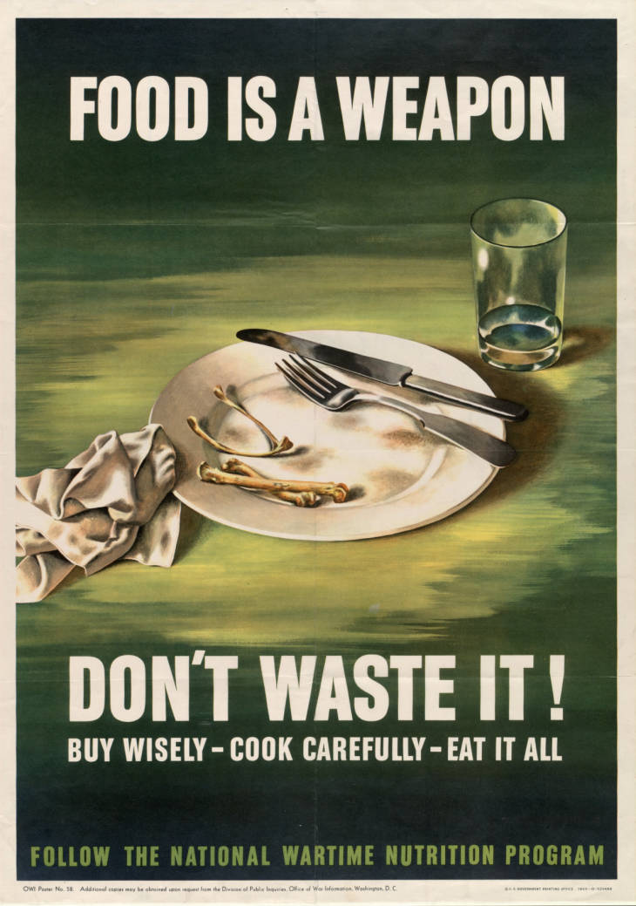

Truth be told I had absolutely no idea what I was getting into when I promised to write an article about the History of Dieting. I figured I could trim the fat, no pun intended, and narrow it down to the important bits. Now, the thought of writing one little blog about the entire history of dieting is laughable.
I’ve decided to make this a series of articles. I’ll intersperse other topics between new updates, but there’s just too many intricacies to cover here. It’s a little over whelming; I’m not going to lie.
What intrigued me most this week, is the effect World War II had on the American diet. Due to fast-moving technological advancements brought on by the war effort, Americans had new ways to store and process foods. A surplus of poisonous chemicals brought new pesticides (read: DDT), allowing mass agriculture to become a huge business—think corn and sugar.
Before the War
Before we get into American during World War II, we need to briefly discuss pre-war America. As I mentioned in a previous post, a German chemist discovered how to hydrogenate liquid fat, turning liquid into a semi-solid state.1 Once the system was mass produced, food manufactures began to use it in everything they could. Processing foods with hydrogenated fats extended the shelf life of their products.
In-home refrigerators weren’t invented until 1913.2 The first self-contained unit didn’t exist until the 1920s. Refrigerators with separate freezers weren’t commonplace until the 1940s. Thanks, in large part, to the invention of Freon.3 It’s not that frozen food was impossible to store until after the war, it’s just that enough people could afford them, and the chemicals used in fridges weren’t safe enough until after World War II.4
Militarized Food Technology Advancements & the Evolution of the American Palate
I’ve honestly never really given food science a second thought. At least, not until I learned that a lot of our modern food was born out of military necessity. Take canned food, for example. Canned food was originally developed (during the Civil War era) for “soldiers and travelers who could not always access a freshly cooked meal.”5Hey, U.S. military, thanks for the beans, bro.
The U.S. military is actually responsible for a large number of our “instant” food technologies and processed food—powered cheeses (that good, good blue box—Kraft Mac & Cheese), instant drinks, cured meats, etc— all in an effort “to provide combat rations to soldiers”.6
Before World War II, the U.S. Armed Forces produced three meals a day for about 400,000 troups. By the end of World War II, that number increased to almost 12,000,000.7 You read that correctly. We went from four hundred thousand people enlisted to twelve million people in about four years.8 That’s a 3,000% increase.
In order to feed everyone, the United States Military created hundreds of food science projects ranging from university studies, to private-sector studies, to governmental research facilities. This was the birth of the massive industry we now know as modern processed foods.9
The story is long, and probably uninteresting to most of you, but it ends with the invention of the K-ration—or the shirt-pocket meal. It contained dry sausage, soy-flour biscuits, a chocolate bar (What’s up, Hershey), and hard candy.10 “Everything except for the meat was wrapped in cellophane…and then packed into a flat cardboard box.”11 Sound familiar?
You guys, they essentially gave WWII soldiers what would eventually become, Lunchables™. But even those rotted after a time.
The important thing to understand here: Soldiers needed more than just calories. If they had only needed calories, they could just eat Crisco by the handful. No, the war was long, and the body can’t survive, let alone be combat ready, on empty calories. These meals had to have some nutritional value. Vitamin and micro-nutrient deficiencies were a real concern.12
The military continued on with the research. But it never quite found the right combination of things. Dairy went sour. Fats and meats went rancid. Vegetables and fruit rotted. Cans containing food rusted, contaminating its contents. There were reports of piles of military rations on the streets of European countries during the war. The truth was many soldiers would rather go hungry than eat what the military served.13
Coca-Cola & Hershey: Envoys of Peace & Sugar
As I snarkily mentioned above, the Hershey Company was one of the private companies tapped on by the government to help create rations for soldiers overseas in 1937.
“According to Hershey’s chief chemist Sam Hinkle, the U.S. government had just four requests about their new chocolate bars:
They had to weigh four ounces, be high in energy, withstand high temperatures, and ‘taste a little better than a boiled potato’.”14
Why slightly tastier than a boiled potato? The army didn’t want the bars to be so tasty that soldiers would eat them in “non-emergency situations”.15
So, Hershey created the D-ration bar. A mixture of low-nutrition, high calorie (600 per 4 ounce bar in fact) bars whose batter was so vicious each bar had to be molded by hand since it was too thick to move through the normal factory machinery.16
“The combination of fat and oat flour made the chocolate bar a dense brick, and the sugar did little to mask the overwhelmingly bitter taste of dark chocolate. Since it was designed to withstand high temperatures, the bar was nearly impossible to bite into. Most men who ate it had to shave slices off with a knife before they could chew it.”17 Ew.
Here’s where things get political, and relevant to the build up of the sugar industry today.
A massive amount of interest groups lobbied to the right to “shape public policy and influence business behavior” during World War II.18 “Among those interest groups lay the Chocolate and Cocoa Manufacturers Association and other sugar interest groups that Hershey and Coca-Cola relied on to influence government regulations on sugar.” 19
These interest groups would aide in helping Hershey and Coca-Cola circumvent the extreme sugar regulations that took place after the Japanese bombed Pearl Harbor.20 For the most part, they were successful.
While the U.S. government asked Hershey to make their “little better than potatoes” rations, they asked Coca-Cola to create a munitions plant in Alabama.21
Though, that’s not to say Coca-Cola didn’t have their hands full with their soft-drink production. “In the pre-war years, Coca-Cola became the most widely distributed mass-produced item in the United States. By 1941 Coca-Cola was also the largest soft drink manufacturer in the United States…”22
Then, the sugar restrictions hit. The government prioritized sugar for the military, highly restricting companies’ use of the product for commercial use. So, the Hershey continued to create their ration bars, while Coca-Cola fought to prove the their soft-drink was a war-time necessity saying it was a taste of home that could soldiers reinvigorate the soldiers. Military contracts were supplied to both company, allowing both Coca-Cola and Hershey to circumvent the sugar regulations.23
U.S. Army Gen. Dwight D. Eisenhower agreed with Coke’s statement on how American Coca-Cola is. In fact, he
“…made an urgent request…to Army Chief of Staff Gen. George Marshall asking not for more troops, but that three million bottles of crisp, refreshing All-American Coca-Cola be sent to soldiers in North Africa. Marshall approved Eisenhower’s request, know ing how important a taste of home would be in improving troop morale.”24
Coca-Cola built a plant in Algiers within six months of the request.25
“More than five billion bottles of Coke were consumed by military service personnel during the war, in addition to countless serving through dispensers and mobile, self-contained units in battle areas.”26
While Hershey and Coke get a lot of the credit for commercially produced rations and helping in the war effort, the government didn’t just tap on Hershey and Coke. “Heinz created self-heating cans that could be lit with a cigarette, and Kellogg’s supplied K-Rations for soldiers’ breakfasts.”27
Notice how all of these companies are still household names?
And Then What?
Finally, on September 2, 1945, World War II ended with global elation.
The companies that did aide in the war effort through rations, or just supplying troops with five-cent bottles of soft drinks, became lauded as All-American, and prospered greatly after the war. “From the mid-1940s until 1960 the number of countries with (Coca-Cola) bottling operations nearly doubled.”28 And, “Hershey Chocolate Corporation received the Army-Navy ‘E’ Production award…Quartermaster General, Major General Gregory, came to Hershey to present the corporation and Milton Hershey with the award of achievement.”29 Rather than pushing for global expansion, Hershey decided to continue to invest in its company domestically.
And yet:
“The lesson of World War II was clear: We needed more. Bigger budgets. Longer time lines. Better training. Closer cooperation. In a word—one originally proposed by President Theodore Roosevelt—more preparedness.”30
So, food technology continued to march on under the guise of military preparedness.
In the meantime though, U.S. food manufacturers realized how much money they could make from the technological advancements that had already taken place throughout the war.
“Surplus provisions were sold in supermarkets, and manufacturers—mostly to ensure their own survival—began marketing canned and other packaged foods to middle class civilian consumers as items that would facilitate their busy lifestyles. Eventually, ‘instant’ food was democratized through mass production, becoming a generic and inexpensive part of American life.”31
Thus, forever changing the national palate, “and creating new food ways based on processed cheeses and canned meat products.”32
Influences of Propaganda
Okay, so propaganda is a pretty common tactic. It was extremely prevalent in the Jim Crow era.33 It’s highly common during war time. It was absolutely prevalent during WWII. Hitler used it.34 The British used it.35. And, of course, the United States used it. It’s kind of crazy to think about how much propaganda changes a society. How quickly it becomes indoctrinated upon a mass populace.36
Freedom Fries, and Liberty Cabbage
First, we need to get propaganda and the terms for food out of the way. I remember when France refused to join President Bush’s plot to go to invade Iraq after 9/11. I mostly remember this because Americans started calling french fries “freedom fries”.
Clever, right? No. Not clever, but, this wasn’t the first time renaming food like this has happened.
During World War I, sauerkraut was referred to as “liberty cabbage”. German measles were called “liberty measles”.37 Hamburgers were called “liberty steaks”.38
But, let’s be honest. These are terms that didn’t really stick. There’s a deeper vein here that I intend to poke: Propaganda not only changed the way Americans bought, cooked, and ate their food; propaganda changed what Americans consumed.
Victory Gardens
As I said before, canned food became a huge source of rations for soldiers over seas. With 12,000,000 soldiers suddenly needing sustenance, the canned food industry couldn’t keep up with the demand. So, what did both the British and United States government do? They encouraged “victory gardens.”39 They encouraged all citizens, in both suburban and urban areas, to plant and grow their own food so that the military could utilize the crops cultivated at mass production farms.
In fact, the limits and restrictions were so incredibly strict, people could not buy certain foods. “Every American was entitled to a series of war ration books filled with stamps that would be used to buy restricted items (along with payment), and within weeks of the first issuance, more than 91 perfect of the U.S. population had registered to receive them.”40
By the spring of 1942, “Americans were unable to purchase sugar without government-issued food coupons. Vouchers for coffee were introduced in November, and by March of 1943, meat, cheese, fats, canned fish, canned milk, and other processed foods were added to the list of rationed provisions.”41 Rationing for private businesses also applied for their commercial products. There were ways around it for private companies, but I’ll talk about about this later.
Due to these restrictions, canning food at home was also highly encouraged by the U.S. Government. This was in effort to alleviate some of the pressure put on the canning industry that needed to reverse food for the U.S. military.42 Doing so was seen as being patriotic and aiding in the war effort.43
“Historians estimate that by 1943 up to 20 million victory gardens were cultivated, helping sustain the needs of the country. Although wartime propaganda tended to portray gardening as a masculine activity, a wide variety of the population helped to grow produce, including women and children.”44
Hold My Beer
As of 2018, the beer industry (not alcohol—just beer) “contributes more than $328 billion to the U.S. economy”.45 One of the most American things to do is have a beer and watch football. But not just any beer. No, the most American thing to do is to have a good ole-fashioned American lager—a Bud Lite, a Coors Lite, a Miller Lite, etc.
Setting aside the fact that the “lager” is a traditionally German yet we put the world “lite” on a bottle and call lagers “domestic” beers, to have a Bud, watch “the game” (whatever game that happens to be), and maybe grill out in the back yard is as American as the Fourth of July.46
Why are lite lagers so patriotic? As America entered World War II, many fought to keep the camps dry.47 After all, prohibition had just been repealed in 1933. However, the soldiers were not going to be stopped from finding their own escapes off base. Prostitution and boot-leg liquor found it’s way into the soldiers’ camps. To remedy this, the post exchange system was put into place. This system opened service clubs serving food, soft drinks, and beer.48 Beer on base meant less mingling with local women in foreign taverns and pubs—which tampered tempers in surrounding communities.49 Since the government mandated the beer served to service people have a low ABV (a measly three point two percent), lagers were a perfect option.
Unlike English ales, lagers are low in alcohol content. Additionally, with imports highly regulated due to the military’s need to keep shipping lines open, domestic breweries had an extremely limited supply of malt and barley. Breweries on the brink of extinction due to prohibition found new life producing lite lagers.50 Beers started being canned rather than bottled to make the drink easier to ship. Some breweries even painted the can a deep green color to prevent the sun from reflecting on the bright metal.51
Soldiers brought the popularity of beer home with them, and by the 1950s, “drinking beer from the can was cool, edgy, and worldly, and the beer can was redesigned.”52
At home, advertisements (read: propaganda) produced by a group called the Brewery Industry Foundation directly linked beer to patriotism.53 “Under the banner, ‘Morale is a Lot of Little Things,” the campaign implored consumers to lift wartime spirits via simple, everyday acts. Namely, purchasing and consuming beer.”54 These advertisements were placed domestically as well as in foreign theaters, to encourage wives to buy, and soldiers to drink, beer.
These advertisements conveyed, “the sorts of Rockwellian ideals that might inspire GIs living off cigarette and C-rations to recall America as the land of plenty…
…Moreover, it encourage American consumers to equate beer with nationalism—no small feat in 1942, just nine years after the repeal of Prohibition.”55
The message: Beer makes you happy. We could all be a little happier during the war. Boost your moral with beer!56 This type of propaganda worked well. Beer sales increased by two-thirds from 1940 to 1950.57
Fun fact: Beer continued to follow troops around the world. “According to one estimate, solders in Vietnam consumed approximately 32 millions cans of beer each month.58
Conclusion
It is undeniable that World War II has played a major role in how and what Americans eat. It: Introduced instant-foods and highly processed foods, changed the way Americans farmed, encouraged in-home food preservation techniques, altered our opinions on specific foods, and evolved the popularity of certain foods.
For example: Spam. Created in 1937 by the Hormel Foods Corporation, “over 150 million pounds (of Spam) were used in the war effort, making Spam a cornerstone of the troops’ diet. (Soldiers also used Spam’s grease to lubricate their guns and waterproof their boots.)”59Hormel apparently embraces people’s love/hate relationship with the canned meat product so much so that, Jay Hormel, “the man who spam made rich,” kept a ‘Scurrilous File’. A collection of hate mail from American GIs.”60
All of this, even still, is just the tip of the ice berg. World War II and the U.S. military played a huge roll in the modern American diet. If you ever wonder why Americans eat the way we do, look no further than World War II.61
Photo credit: Hennepin County Library
-
“Trans Fats.” www.heart.org. Accessed October 21, 2020. https://www.heart.org/en/healthy-living/healthy-eating/eat-smart/fats/trans-fat. ↩
-
Wolf, Fred W. Refrigerating Apparatus. ↩
-
Modern Marvels, web.archive.org/web/20080326092256/www.history.com/exhibits/modern/fridge.html. ↩
-
As far as I can tell, that didn’t come about because of the war. It’s just a happy coincidence. ↩
-
Tunc, Tanfer Enim, and Annessa Ann Babic. “Food on the Home Front, Food on the Warfront: World War II and the American Diet.” Taylor & Francis, 18 Apr. 2017, www.tandfonline.com/doi/full/10.1080/07409710.2017.1311159. ↩
-
Ibid. ↩
-
Salcedo, Anastacia Marx de. Combat-Ready Kitchen: How the U.S. Military Shapes the Way You Eat. Current, 2015. ↩
-
For context, that’s like if literally everyone (babies included) in the states of Washington and Arizona went off to war. ↩
-
Ibid. ↩
-
Ibid. ↩
-
Ibid. ↩
-
There’s a story in this book Combat-Ready Kitchen about a soldier, who happened to be an MIT graduate, who devised a vitamin A deficiency test by measuring his fellow soldiers’ ability to see light through sheets of toilet paper. Crazy. Absolutely crazy. ↩
-
Ibid. ↩
-
Butler, Stephanie. “How Hershey’s Chocolate Helped Power Allied Troops During WWII.” History.com, A&E Television Networks, 6 June 2014, www.history.com/news/hersheys-chocolate-allied-d-day-rations-wwii. ↩
-
Ibid. ↩
-
Ibid.
Hershey also produced parts for naval anti-aircraft guns. ↩
-
Ibid. ↩
-
Hostetter, Christina. “Sugar Allies: How Hershey and Coca-Cola Used Government Contracts and Sugar Exemptions to Elude Sugar Rationing Regulations.” University of Maryland, 2004. ↩
-
Ibid, vi
No, I didn’t know Big Sugar was a thing during World War II either. ↩
-
Ibid, 13. ↩
-
Ibid, 14. ↩
-
Ibid, 16. ↩
-
Ibid, 25.
The story is way longer and significantly windier, but I’m cutting down for sanity’s sake. ↩
-
Jones, Tyler. “Historical Society to Offer Refresher on Coke’s WWII Impact.” The Brunswick News, 19 Apr. 2017, www.thebrunswicknews.com/life/historical-society-to-offer-refresher-on-cokes-wwii-impact/article_cbbfd3e8-4f2b-57dd-808c-1cbec9ce0861.html. ↩
-
Ibid. ↩
-
Ibid. ↩
-
Butler. “How Hershey’s Chocolate Helped Power Allied Troops During WWII.” ↩
-
Journey Staff. “History of Coca-Cola: The War and What Followed: Coca-Cola GB.” The Coca-Cola Company, www.coca-colaindia.com/stories/our-story-1941-1959–the-war-and-what-followed. ↩
-
“Serving Our Country: Hershey Chocolate’s Contributions to World War II.” Hershey Community Archives, 9 Apr. 2010, www.hersheyarchives.org/encyclopedia/serving-the-country-hershey-chocolates-contributions-to-wwii/. ↩
-
Ibid. ↩
-
Tunc, Tanfer Enim, and Annessa Ann Babic. “Food on the Home Front, Food on the Warfront: World War II and the American Diet.” ↩
-
Ibid. ↩
-
I actually wrote a 50 page paper on racist propaganda in children cartoons from 1930-1953. Maybe I’ll post it sometime. ↩
-
Learn more here: https://encyclopedia.ushmm.org/content/en/article/nazi-propaganda ↩
-
Learn more here: https://www.iwm.org.uk/learning/resources/second-world-war-posters ↩
-
Just ask your annoying uncle about the Coronavirus, and listen to him go on and go about how you mean the “China Virus”. #faceplam ↩
-
Baker, Jonathan. “Freedom Fries, Liberty Cabbage & the Myth.” HPPR, 2018, www.hppr.org/post/freedom-fries-liberty-cabbage-myth. ↩
-
Tunc, 2017.
Although, I’m pretty sure modern hamburgers were actually created in the U.S., not Hamburg. Citation needed. ↩
-
Stoller-Conrad, Jessica. “Canning History: When Propaganda Encouraged Patriotic Preserves.” NPR, NPR, 3 Aug. 2012, www.npr.org/sections/thesalt/2012/08/02/157777834/canning-history-when-propaganda-encouraged-patriotic-preserves. ↩
-
Schumm, Laura. “Food Rationing in Wartime America.” History.com, A&E Television Networks, 23 May 2014, www.history.com/news/food-rationing-in-wartime-america. ↩
-
Barter systems were introduced among neighbors for those that wanted to trade certain stamps. Black markets for specific goods also popped up all over the nation.
Ibid. ↩
-
Stoller-Conrad, Jessica. “Canning History: When Propaganda Encouraged Patriotic Preserves.” ↩
-
“Food Rationing and Canning in World War II.” National Women’s History Museum, 13 Sept. 2017, www.womenshistory.org/articles/food-rationing-and-canning-world-war-ii. ↩
-
Ibid.
I’m not going to get into the gender stereotypes that the war effort essentially reversed here, but it seems like a fascinating read, no? ↩
-
“Economic Impact.” Beer Institute, 17 Nov. 2020, www.beerinstitute.org/industryinsights/economic-impact/. ↩
-
Lowe, Miranda Summers. “How the Army Made Lager America’s Beer.” War on the Rocks, 20 Dec. 2018, warontherocks.com/2018/12/how-the-army-made-lager-americas-beer/.
Which is hilarious to me, because in WWII many Americans refused to drink “German beer”. As long as it came from a domestic brewery (which most didn’t—Yuengling is the only mostly-domestically owned brewery in the U.S.) is was okay, I guess. ↩
-
Ibid. ↩
-
Ibid. ↩
-
Ibid. ↩
-
Ibid. ↩
-
Ibid.
I read enemy airplanes could literally spot a camp due to the gleaming metal cans. ↩
-
Ibid. ↩
-
Saladino, Emily. “Beer and American Patriotism Are Inseparable Thanks to WWII.” VinePair, 10 Nov. 2017, vinepair.com/articles/world-war-two-beer-patriotism/. ↩
-
Ibid. ↩
-
Ibid. ↩
-
I mean, I see the flaw here. But when I watched an attempted coup happen in my own country yesterday, I definitely didn’t not drink. ↩
-
Ibid. ↩
-
Ibid. ↩
-
Ruvio, Ayalla. “How Spam Went from Canned Necessity to American Icon.” Smithsonian.com, Smithsonian Institution, 5 July 2017, www.smithsonianmag.com/food/how-spam-went-canned-necessity-american-icon-180963916/. ↩
-
DeJesus, Erin. “A Brief History of Spam, an American Meat.” Eater, Eater, 9 July 2014, www.eater.com/2014/7/9/6191681/a-brief-history-of-spam-an-american-meat-icon. ↩
-
I didn’t mean to end this on a rhyme, but here we are. ↩